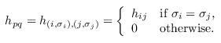
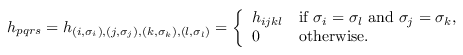

| Safe Haskell | None |
|---|
Algorithms.GSE.GSEData
Contents
Description
This module contains functions for reading the GSE one- and two-electron integral data from a file, converting this data from spatial to spin indices, and accessing the data.
The external interface consists of the type GSEData and the
function load_gse_data.
The Quipper distribution contains example data files
"h_1e_ascii" and "h_2e_ascii". These files contain enough
data for M = 32 spin orbitals (corresponding to M/2 = 16
spatial orbitals). Note that the example data was randomly
generated and is only a mock-up. In actual applications, physically
meaningful data should be substituted.
- data GSEData = GSEData {
- gse_data_M :: Int
- gse_data_h1 :: (Int, Int) -> Double
- gse_data_h2 :: (Int, Int, Int, Int) -> Double
- load_gse_data :: Int -> String -> String -> IO GSEData
- access_1e :: Array (Int, Int) e -> (Int, Int) -> e
- access_2e :: Array (Int, Int, Int, Int) e -> (Int, Int, Int, Int) -> e
- is_comment :: String -> Bool
- parsefile1 :: Int -> String -> Array (Int, Int) Double
- parsefile2 :: Int -> String -> Array (Int, Int, Int, Int) Double
- spin1 :: ((Int, Int) -> Double) -> (Int, Int) -> Double
- spin2 :: ((Int, Int, Int, Int) -> Double) -> (Int, Int, Int, Int) -> Double
- print_1e :: GSEData -> String
- print_2e :: GSEData -> String
- gse_data_test :: Int -> IO ()
Data abstraction
A data structure describing the GSE Data - the number of integrals and the functions to access the data by index.
Constructors
| GSEData | |
Fields
| |
Reading GSE data from files
This section provides function for reading one- and two-electron GSE data from files. The file formats are as follows. The file for the one-electron data consists of lines of the form:
((i, j), h)
where i and j are integer indices in the range from 0 to M−1, and h = hi,j is a real floating point number. Please note that the file contains data for (i, j) and (j, i), and that the indices i and j are in spatial coordinates. The file data is sorted in order of increasing i, then j.
The file for the two-electron data consists of lines of the form:
((i, j, k, l), h)
where i, j, k, and l are integer indices in the range from 0 to M−1, and h = hi,k,l,j is a real floating point number. Please note that the indices i, j, k, and l are in spatial coordinates, and the ordering of indices in the file follows the chemists' convention. Also, to save storage space, the file only contains data for i ≥ j, k ≥ l, and either i > k, or i = k and j ≥ l. The remaining data must be inferred from symmetries. The file data is sorted in order of increasing i, then j, then k, then l.
We also note that the data files, and the functions of this module where noted, are the only places where we use Chemists' notation and spatial orbitals. The remainder of our implementation uses physicists' notation and spin orbitals throughout.
load_gse_data :: Int -> String -> String -> IO GSEDataSource
Read the GSEData from two files. The first argument is M, the
number of spin orbitals. The second and third argument are the
filenames for the one-electron and two-electron data, respectively.
If the file contains data for more than M spin orbitals, ignore the excess data (this is useful for generating smaller problem sizes for testing). In this case, only the necessary portion of the file is read. If the file contains data for fewer than M spin orbitals, this is silently ignored, but will lead to an "undefined" error later.
Low-level access functions
access_1e :: Array (Int, Int) e -> (Int, Int) -> eSource
Access 1-electron integral data. The indices are spatial, i.e., they run from 0 to M/2 − 1.
access_2e :: Array (Int, Int, Int, Int) e -> (Int, Int, Int, Int) -> eSource
Access 2-electron integral data. The input array is sparse (i.e., contains only one representative of each equivalence class), and uses chemists' conventions. The output uses physicists' conventions. The indices in both input and output are spatial, i.e., they run from 0 to M/2 − 1.
Low-level parsing functions
is_comment :: String -> BoolSource
Decide whether a string is a comment. A comment is a line with only whitespace characters, or where the first non-whitespace character is '#'.
parsefile1 :: Int -> String -> Array (Int, Int) DoubleSource
Extract an array from the one-electron file data. We do this lazily, i.e., we stop reading as soon as enough data is found. The resulting array uses spatial indices.
parsefile2 :: Int -> String -> Array (Int, Int, Int, Int) DoubleSource
Extract an array from the two-electron file data. We do this lazily, i.e., we stop reading as soon as enough data is found. The resulting array uses spatial indices in chemists' notation. Also, the output array is sparse; it only contains as much data as the file itself.
Conversion of spin to spatial indices
spin1 :: ((Int, Int) -> Double) -> (Int, Int) -> DoubleSource
In the molecule we have twice as many orbitals (spin orbitals) than data in the integral file (spatial orbitals). This function converts h1 from spatial-orbitals (M/2 = 104) to spin orbitals (M = 208).
Spin orbitals are indexed by p=(i, σi), where i is a spatial index and σi is a spin (up or down). For two spin indices p=(i, σi) and q=(j, σj), the transition integral hpq is given by the following formula:

The Hamiltonian vanishes for σi ≠ σj because we assume that there is no spin orbital coupling.
Given M/2 spatial orbitals, we re-map the spin orbitals to integers from 0 to M−1 using the formula p = 2i+σi, where σi is 0 or 1.
The function spin1 inputs (hij), the table of 1-electron
integrals for M/2 spatial orbitals, and outputs the
corresponding table (hpq) for M spin orbitals.
spin2 :: ((Int, Int, Int, Int) -> Double) -> (Int, Int, Int, Int) -> DoubleSource
Like spin1, but for 2-electron integrals. Here, the transition
integrals in spin coordinates are given by:

The Hamiltonian vanishes for σi ≠ σl or σj ≠ σk because we assume that there is no spin orbital coupling.
The function spin2 inputs (hijkl), the table of
2-electron transition amplitudes for M/2 spatial orbitals, and
outputs the corresponding table (hpqrs) for M spin
orbitals. Index ordering follows the physicists' convention.
Testing
gse_data_test :: Int -> IO ()Source
A main function to test the GSEData module.